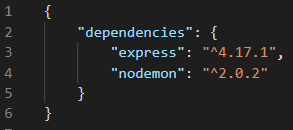
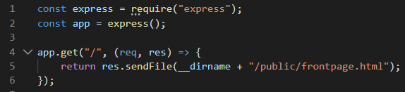

Navigation in Commandline
When I am navigating my folders and accessing different files we use commands such as 'cd' 'ls'.
'cd' for navigating folders and 'ls' for seeing a list of current files of the folder that I am in.
NPM
NPM stands for Node Package Manager and that means that you have to install NodeJS to take advantage of NPM.
NPM is a package manager and lets developers download different packages for different usages.
Packages are defined in a package.json file and are written in JSON. Here is an example of a package (that is defined in package.json) and one that I use to serve my HTML pages:

To install packages with NPM you use: "npm install 'what package to install'.
If I want to install Express I would type: "npm install express" in commandline.
Before I would enter that command, I'd like to create a package.json in my project folder. Herein, I manage my packages amongst other things.
Packages can be installed globally for all projects as well as just for this project.
Express
Express is a very lightweight package and, in their own words, features robust routing and focuses on high performance. It enables me to use HTTP methods such as GET, POST, PUT and DELETE.
Here is an exaple of Express in use:

Line 1: Load the module Express from node_modules.
Line 2: Instantiate an object of Express.
Line 4: We create a GET route for when a client requests the page "/" and then we, the server, responds with serving a frontpage.html file to the client.
Nodemon
Nodemon is another package that helps us develop node.js based applications in a more convenient way. Once installed, instead of using 'node app.js' we can use 'nodemon app.js'.
Nodemon automatically restarts the application, once it detects a change in the files of our project.